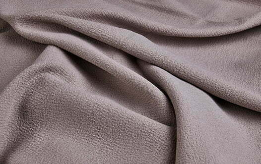
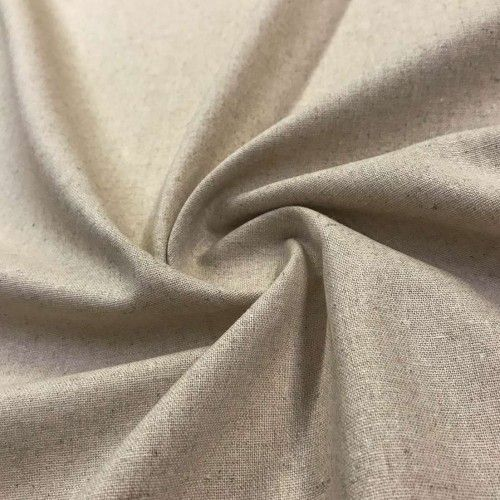

Responsabilidade
Matérias-Primas
As escolhas das matérias-primas tiveram um longo caminho em pesquisas, sempre tendo como foco o menor impacto ambiental aliado a maior durabilidade.
Responsabilidade na Cadeia Produtiva
Nossos fornecedores, passam por uma extenso processo para definição e assinatura de contrato, e contínuo ritmo de fiscalização para garantirmos nossas premissas de menor impacto ambiental quando maior durabilidade
Tecidos

Tecidos sustentáveis são aqueles que podem diminuir o impacto ambiental criado pela produção têxtil. E isso pode ser definido de diferentes formas, como: Tecidos biodegradáveis e Tecidos recicláveis
Algodão Orgânico
O cultivo do algodão orgânico preserva a saúde do solo graças à utilização do sistema de rotação de culturas (alternar o mesmo espaço com outra espécie de modo que os nutrientes do solo não se esgotem), descartando a necessidade de fertilizantes sintéticos – o que explica seu menor consumo de água. Não há uso de pesticidas, pois as pragas são combatidas com a inserção de espécies predatórias benéficas ou com outro tipo de planta que seja mais atraente para esses insetos; e ervas daninhas são retiradas manualmente e os agrotóxicos são desprezados.
Poliamida Biodegradável
Fibra que tem menor impacto ambiental quando o produto é descartado. A poliamida é uma fibra geralmente utilizada em roupas íntimas, esportivas, moda praia e acessórios. Aqui na Renner consideramos como opções mais sustentáveis a poliamida biodegradável e a reciclada. A biodegradável permite que as roupas se decomponham em 3 anos, quando descartadas corretamente em aterros sanitários. Já a reciclada é feita a partir do reaproveitamento de outras fibras e pode ser certificada de acordo com o Recycled Claim Standard (RCS) ou o Global Recycled Standard (GRS).
Liocel

Fabricado a partir da polpa da madeira, o liocel é uma fibra que usa produtos químicos livres de solventes nocivos em sua produção. O tecido é feito com a celulose presente na madeira e os solventes usados são quase que totalmente reciclados após o processo.
Linho
O linho é um tecido sustentável usado desde as antigas civilizações como, inclusive, para bandagens de mumificação, tendas e velas de barco no Egito Antigo. Resistente e versátil, exige baixa irrigação para ser cultivado e nenhum agrotóxico em seu plantio. É do seu caule e raiz que são extraídas as fibras usadas para a composição de tecidos sustentáveis para acessórios, colchas, roupas e artigos de cama, mesa e banho.